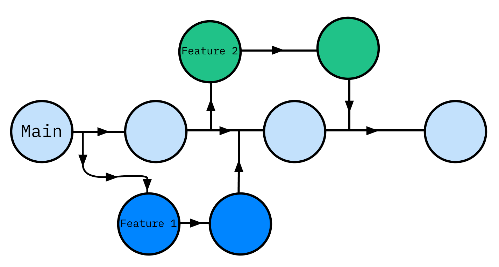
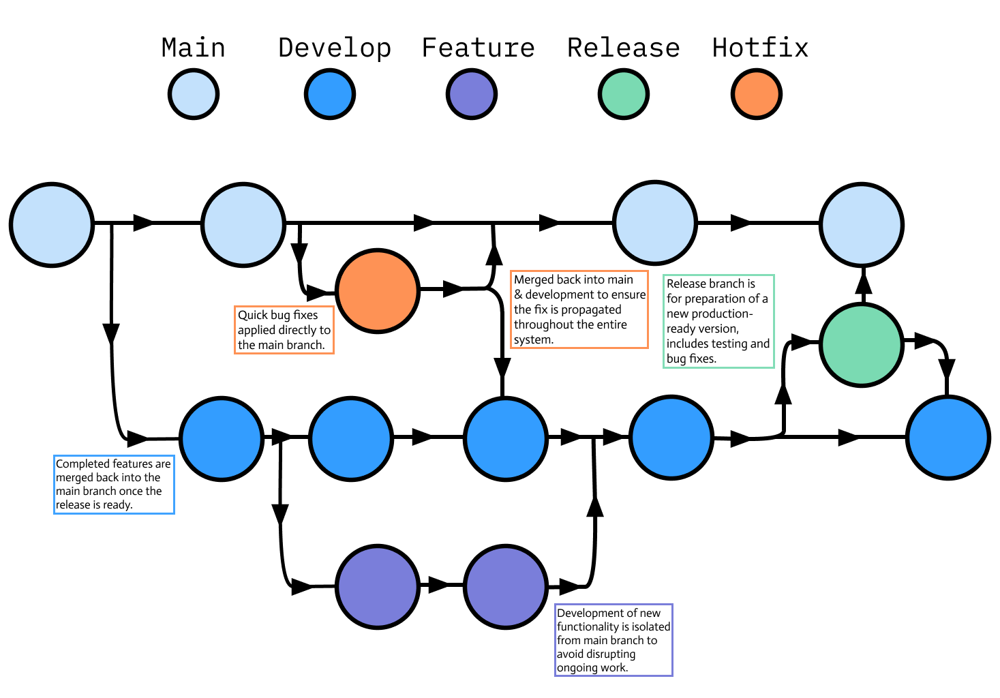
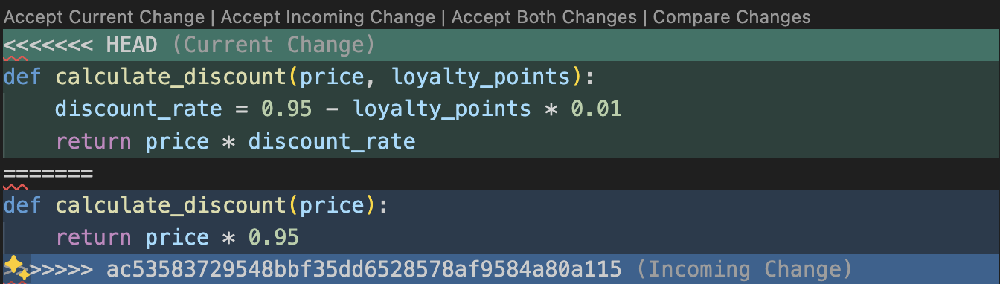
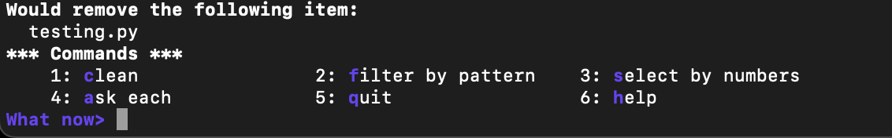

Introduction
This post picks up where the Basic Git Commands and Concepts guide left off, which covered introductory concepts and commands such as the staging area, everyday git commands, working with branches and remote repositories. Here, we will focus on slightly more advanced ideas, including implementing different Git workflows, managing merge conflicts, stashing changes and cleaning up your repo.
Branch Strategies
Firstly, we need to define what a branching strategy in Git is. You can think of it as a set of rules a development team follows for creating and managing branches in a Git repository. The goal is to streamline the development process, facilitate continuous integration and delivery and manage releases in an orderly fashion. A good branching strategy should provide a clear framework for handling different versions of code, managing new features, fixes, and releases, and ensuring that the codebase remains stable and deployable at any given time.
Feature Branching
An example of a simple but useful git strategy is feature branching. Essentially, the idea is that all features should be encapsulated in their dedicated branches, separate from the main branch. This approach helps prevent potentially buggy code from making its way into the main code base. Another advantage of this workflow is that it allows for greater collaboration, as other team members can verify that your feature works before it is integrated via a pull request.

Here’s a typical sequence of commands you would need when utilising this workflow:
1. Clone the Repository
First, clone the remote repo to your local machine, setting up a connection to the remote server with your local repo in the process.
git clone <remote_repo_url>
cd <project_name>2. Create & Switch to New Feature Branch
Create a feature branch off of the main branch (we run git pull before creating the feature branch to minimise merge conflicts later on).
git checkout main
git pull
git checkout -b new-feature main3. Make Changes Locally
Make your code changes locally on your new-feature branch, add and commit those changes.
git add <file_name>
git commit -m "<commit message>"4. Push Feature Branch to Remote Repository
After committing your changes locally, the next step is to share the branch with your team by pushing it to the remote repository. This enables collaboration, as others can see the branch and contribute if necessary. It also ensures that your work is backed up remotely.
git push -u origin new-featureThis command pushes the new-feature branch to the remote repository (origin) and sets it to track the remote branch, which is useful for subsequent pushes and pulls.
5. Open a Pull Request
Once your feature is ready and pushed to the remote repository, you’ll typically open a pull request (or merge request, depending on the platform like GitHub, GitLab, etc.). This is a request to merge your feature branch into the main branch. The pull request allows team members to review the code, discuss it, run automated tests, and provide feedback or approval before the changes are integrated into the main branch.
6. Review & Merge the Pull Request
After creating the pull request, it enters the review phase. Team members can review the changes, discuss modifications, and request further commits if necessary. If the pull request meets all criteria (passing tests, approvals, etc.), it is merged into main via the platform interface of the hosting service.
7. Pull the Updated Main Branch
Once your feature branch has been merged, you should update your local main branch to reflect the merged changes.
git checkout main
git pullThis ensures that your local main branch is synchronised with the remote, containing all the latest merged changes.
8. Delete the Feature Branch (Optional)
After a feature branch is merged, it’s usually no longer needed, you can clean up by deleting it both locally and remotely, to keep the repo tidy.
git branch -d new-featureThis deletes the branch locally, using -d which ensures you can only delete the branch if it has been fully merged in its upstream branch.
When we first push the new-feature branch to the remote repository using git push -u origin new-feature, the -u option sets the upstream branch for our local new-feature branch. This means that origin/new-feature becomes the default branch for any future push and pull operations on this branch. Setting the upstream branch is crucial as it allows Git to know where to push your changes and from where to fetch updates without specifying the remote and branch each time.
To delete the remote branch use:
git push origin --delete new-featureGit Flow
Git flow is one of the most well-known branching models, it is particularly well-suited for projects that have a scheduled release cycle and require multiple stages of development and testing.
It involves two primary branches:
main: This branch holds the official release history and is considered production-ready at all times.develop: This branch serves as an integration branch for features. It contains the complete history of the project but is more a state of development rather than stable production.
Alongside these branches, Git flow uses various types of support branches to help with parallel development between team members, ease tracking of features, prepare for production releases and assist in quickly fixing live production issues. These are:
Feature branches: Branch off from
developand merge back intodevelopwhen they are completed. These are used for developing new features, they should never interact directly withmain.Release branches: These support preparation for a new production release. Branching off from
developwhen a certain number of features are ready or a scheduled release date approaches. They allow for minor tweaks and preparation tasks that need to be done before the release. Once ready, they merge into main and are tagged with a version number, and back into develop to ensure that any changes made in the release branch aren’t lost.Hotfix branches: Used to quickly patch production releases. They are the only branches that should branch directly off
main. Once the fix is complete, they should be merged into bothmainanddevelop(or the current release branch) andmainshould be tagged with an updated version number.
Here’s what this looks like visually:

We can make use of the Git Flow extension, which provides high-level repository operations for this particular branching model. Designed by Vincent Driessen, this set of extensions extend Git’s functionality to automate the process of managing branches according to the model.
The Git flow extension may not be installed on your system, you can find instructions on how to install it here.
Here are some of the most common commands you’ll use with this flow.
1. Initialising a Repository with Git Flow
Assuming you’ve already cloned a Git repository, start with:
git flow initThis sets up your repository with the standard Git Flow branches we mentioned. It will prompt you to confirm the names of your branches, which are typically set to the defaults develop, master, feature/, release/, hotfix/, support/.
2. Start a New Feature
To start developing a new feature:
git flow feature start my-featureThis will:
- Switch to the
developbranch. - Update your local repository
- Create a new feature branch called
feature/my-featurebased ondevelop.
3. Develop the Feature
Make your code changes, add and commit them as usual:
git add <file_name>
git commit -m "<commit message>"4. Finish the Feature
Once feature development is complete:
git flow feature finish my-featureThis command:
- Merges
feature/my-featureintodevelop. - Deletes the
feature/my-featurebranch - Switches back to the
developbranch.
5. Start a Release
When you’re ready to prepare a new production release:
git flow release start 1.0.0This creates a new branch called release/1.0.0 based off develop.
At this point, you can still make any necessary last-minute tweaks directly on the release branch, with git commit. Any commits made will be on this release/1.0.0 branch.
6. Finish the release
To complete the release, merge it into master or main:
git flow release finish '1.0.0'This command performs a few actions:
- Merges
release/1.0.0intomain. - Tags the release with
1.0.0. - Merges
release/1.0.0back intodevelop. - Deletes the
release/1.0.0branch.
7. Push changes to Remote
Push all branches and tags (more on Git tags later on) to your remote repo:
git push origin develop
git push origin main
git push --Tags8. Start a Hotfix
If you need to make a critical fix directly on main:
git flow hotfix start hotfix-branchThis creates a new branch hotfix/hotfix-branch based off main.
9. Finish the Hotfix
After making the fix and committing changes:
git flow hotfix finish hotfix-branchThis will:
- Merge
hotfix/hotfix-branchinto bothmainanddevelop - Tag the new version
- Delete the
hotfix/hotfix-branch
11. Push Hotfix Changes
Finally, push the changes and tags to the remote repo once more:
git push origin develop
git push origin main
git push --TagsStashing Changes
Stashing in Git is a powerful feature that allows you to temporarily save changes you’ve made in your working directory without committing them to the repository’s history. This is particularly useful when you need to switch contexts quickly, such as changing branches or pulling updates, but you’re not ready to commit. Stashing helps keep your working directory clean and allows you to apply saved changes later, either to the same branch or to a different one.
Saving Changes
When you have modified files that are not yet ready to be committed you can use:
git stashTo record the current state of your working directory and the staging area. This action creates a new stash entry—a snapshot of your modifications at that moment.
git stash does not automatically include untracked files or ignored files in the stash by default, it only stashes changes that have been added to the staging area and modificaitons to files that are already tracked by Git. To stash any untracked files along with the tracked changes run: git stash push -u.
List of Stashes
You can have multiple stash entries stored at the same time. Each stash is stored in a stack, where the most recent stash is on top. You can list all stashes using:
git stash listGit displays a list of stashes in the stack, formatted as follows:
stash@{0}: WIP on branch_name: commit_hash Message of the last commit before stashing
stash@{1}: WIP on branch_name: commit_hash Message of the last commit before stashingDropping a Specific Stash
When you want to drop (delete) a specific stash, you have to specify it’s index number:
git stash drop stash@{n}where n is the index of the stash you want to drop.
If you run git stash drop without specifying an index, Git will default to dropping the most recent stash i.e. stash@{0}
Another convenient command is:
git stash popallowing you to quickly move your most recently shelved changes into the working directory and delete the popped stash in the process.
Applying Stashed Changes
To reapply changes from a stash without deleting the stash we can use:
git stash applyYou can specify which stash to apply the pop or apply commands using the stash identifier stash@{n} e.g. git stash pop stash@{1} or git stash apply stash{0}.
Managing Merge Conflicts
A merge conflict in Git occurs when Git is unable to automatically decide which differences in code should take precedence between two commits. This situation typically arises during the merging of two branches when multiple developers have made edits to the same parts of a file. Conflicts might involve edits to the same lines, or contradictory file operations such as deletions and additions. Since Git cannot resolve these conflicts, they require manual intervention to determine which changes should be incorporated into the final merge.
To illustrate how a merge conflict might occur and how to resolve it, let’s walkthrough a scenario:
Merge Conflict Scenario
Main Branch Code
def calculate_discount(price):
return price * 0.95Feature Branch Code (created from main)
def calculate_discount(price, loyalty_points):
discount_rate = 0.95 - loyalty_points * 0.01
return price * discount_rateDeveloper B updates the calculate_discount function in the feature branch to incorporate a discount based on loyalty points, while Developer A makes a different modification to the same function on the main branch to change the discount rate. When attempting to merge the feature branch back into main, Git will flag this as a conflict because both branches altered the same lines in the function, and there’s no clear rule on which change should take precedence.
We can see exactly which files are conflicted with git status which will return some useful information:
On branch main
Your branch and 'origin/main' have diverged,
and have 1 and 1 different commits each, respectively.
(use "git pull" to merge the remote branch into yours)
You have unmerged paths.
(fix conflicts and run "git commit")
(use "git merge --abort" to abort the merge)
Unmerged paths:
(use "git add <file>..." to mark resolution)
both modified: discount.pyUpdate the Main branch
Firstly, Developer B should ensure their local main branch is up-to-date with the latest changes from the remote repository. This reduces the likelihood of further conflicts and ensures that any changes are built on the most recent version of main.
git checkout main
git pull origin mainMerge Main into the Feature Branch
Before merging the feature branch into main, it’s good practice to first merge the latest main into the feature branch. This way Developer B can handle any conflicts on their feature branch without affecting the main branch.
git checkout feature
git merge mainResolve Conflicts Locally on the Feature Branch
Git will highlight the conflicting lines of code once you open the file in question within your code editor.

At this point Developer B can resolve the conflict by editing the file to integrate both changes, for example:
def calculate_discount(price, loyalty_points=0):
return price * (0.90 - loyalty_points * 0.01) Finalise the Merge
Once all conflicts are resolved, Developer B stages and commits the resolved files:
git add <file_name>
git commit -m "Resolved merge conflict by integrating changes from main into feature"Push Changes
After ensuring that their feature branch works correctly with the changes from main and that all conflicts are resolved, Developer B can push the updated feature branch to the remote repository.
git push origin featureMerge Feature into Main
Finally, if Developer B has permission to merge into main, or if there’s a pull request this would be the time to initiate it, if directly merging you can use:
git checkout main
git merge feature
git push origin mainThis careful approach of merging main into the feature branch first, resolving conflicts there, and then merging back into main helps maintain the stability and integrity of the main codebase. It ensures that the main branch only receives fully integrated and tested code, minimising disruptions in the mainline development.
Cleaning Up Your Repository
In this final section, we’ll explore how to tidy up your Git repository by removing unneeded files and optimising the repository’s performance. This cleanup is crucial for maintaining an efficient workflow, especially in large projects or ones that have evolved over time. We’ll focus on two powerful commands: git clean and git gc.
Using git clean to Remove Untracked Files
The git clean command is used to remove untracked files from the working directory. This is especially useful in scenarios where your workspace is cluttered with build outputs, logs, or other temporary files that you don’t want to commit.
git clean is a destructive command that will permanently delete files, so it should be used with caution.
Dry Run: Before actually deleting any files, perform a dry run to see which files will be deleted:
git clean -nInteractive Mode: To choose which files to delete, use the interactive mode:
git clean -i
This mode presents a user-friendly interface to select which untracked or modified files to delete or ignore. Users are provided with a list of commands to interact with items that git clean has identified for potential removal.
The options are:
- clean: Immediately deletes the file listed without further prompts.
- filter by pattern: Allows you to specify a pattern to filter out the list of items, e.g. you could input
*.logto select all log files, and only these files would be considered for cleaning. - select by numbers: This option allows you to choose files based on their listed numbers. You can typically input a series of numbers separated by spaces or use ranges to select multiple files.
- ask each: With this option, Git will prompt you for each file individually, letting you decide whether to clean or not. This can be useful if you want to review each file before making a decision.
- quit: Exits the interactive mode without any changes.
- help: Provides additional information about the commands and how to use them.
For best practices, always perform a dry run before cleaning files and add important files and directories to .gitignore to prevent them from being accidentally deleted.
Optimising the Repository with git gc
The git gc command stands for “garbage collection”. It’s used for optimising the repository by cleaning up unnecessary files and compressing the database of revisions. While Git runs git gc automatically on certain commands, running it manually can be useful when:
- You’ve removed a significant amount of data (e.g. via
git push --force). - Your repository starts to perform poorly.
- After a series of heavy operations like branch merges and deletions.
Basic commands (git status, git commit, git push) taking longer than usual to execute, your .git directory growing significantly in size (consuming more disk space than necessary) and slow network operations that involve remote repositories are all examples of a repository performing “poorly”.
To manually run garbage collection:
git gcThis default command is designed to be relatively fast, while still providing some level of housekeeping for the repo. It’s optimised to run fairly quickly and to be used often without disrupting workflows. It performs several tasks such as compressing file revisions (to a pack file), pruning loose objects and removing objects that are no longer reachable from any commits. git gc performs incremental optimisation, it doesn’t necessarily optimise all files but rather focuses on what it can improve without taking too much time.
When many versions of a file are stored in a Git repository, Git stores them in a pack file. This is a single file that contains the complete contents of multiple objects (like file contents, tree structures and commit information) that Git needs to maintain the history of a repository.
For a more aggressive cleanup, you can use:
git gc --aggressiveThe --aggressive option makes git gc more thorough. It tries to aggressively optimise the repo, which can result in smaller pack files but at the cost of taking more time to execute. It recomputes the delta compression of the pack files, which can potentially find better delta matches and further reduce the size of the pack file. This is more CPU-intensive and can take significantly longer, especially in large repositories. Therefore, this command is intended for occasional maintenance e.g. before making a repository clone available to others, or if repo performance has degraded drastically.
Delta compression is a method of reducing the size of pack files. Instead of storing the full content of every version of every file, Git stores the initial version of the file (known as a base) and then only the changes made in subsequent versions. These changes are the “deltas”. When Git needs to reconstruct a particular version of a file it starts with the base and then applies each delta in sequence until it reaches the desired version.